대기환경기사 (2015-05-31 기출문제)
1과목: 대기오염 개론
1. 파장이 5240Å인 빛 속에서 상대습도가 70% 이하인 경우 밀도가 1700mg/cm3 이고, 직경이 0.4㎛인 기름방울의 분산면적비가 4.5일 때, 가시거리가 959m 이라면 먼지농도(mg/m3)는?
- 0.21
- 0.31
- 0.41
- 0.51
(정답률: 52%)

2. 오존에 관한 설명으로 옳지 않은 것은? (단, 대류권내 오존 기준)
- 보통 지표오존의 배경농도는 1~2ppm 범위이다.
- 오존은 태양빛, 자동차 배출원인 질소산화물과 휘발성유기 화합물 등의 의해 일어나는 복잡한 광화학반응으로 생성된다.
- 오염된 대기 중에서 오존농도에 영향을 주는 것은 태양빛의 강도, NO2/NO의 비, 반응성탄화수소농도 등이다.
- 국지적인 광화학스모그로 생성된 Oxidant의 지표물질이다.
(정답률: 86%)
3. 다음 중 대기오염물질의 배출원이 되는 제조공정과 그 발생오염물질과의 연결로 가장 거리가 먼 것은?
- 유리제조, 가스공업 - 염소가스
- 화학비료, 냉동공장 - 암모니아가스
- 석유정제, 포르말린제조 - 벤젠
- 석유정제, 석탄건류 - 황화수소가스
(정답률: 66%)
4. 지상에서 NOx를 3g/s로 배출되고 있는 굴뚝없는 쓰레기 소각장에서 풍하 방향으로 3km 떨어진 곳의 중심축상 NOx 지표면에서의 오염농도는 얼마인가? (단, 가우시안모델식을 사용하고, 풍속은 7m/s, σ= 190m, = 65m 이며, NOx는 배출되는 동안에 화학적으로 반응하지 않는 것으로 가정한다.)
- 2.2×10-5g/m3
- 1.1×10-5g/m3
- 5.5×10-6g/m3
- 2.75×10-6g/m3
(정답률: 67%)
5. 유효높이(H)가 60m인 굴뚝으로부터 SO2가 125g/s의 속도로 배출되고 있다. 굴뚝높이에서의 풍속은 6m/s이고 풍하거리 500m에서 대기안정 조건에 따라 편차 σy는 36m, σz는 18.5m 이었다. 이 굴뚝으로부터 풍하거리 500m의 중심선상의 지표면 농도는? (단, 가우시안모델식을 사용하고 SO2는 배출되는 동안에 화학적으로 반응하지 않는다고 가정한다.)
- 약 52 ㎍/m3
- 약 66 ㎍/m3
- 약 2483 ㎍/m3
- 약 9958 ㎍/m3
(정답률: 52%)
6. 다음은 지구온난화와 관련된 설명이다. ( )안에 알맞은 것은?
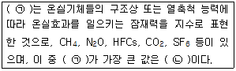
- ㉠ GHG, ㉡ CO2
- ㉠ GHG, ㉡ SF6
- ㉠ GWP, ㉡ CO2
- ㉠ GWP, ㉡ SF6
(정답률: 83%)
7. 다음 설명과 가장 관련이 깊은 대기오염물질은?
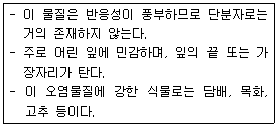
- 일산화탄소
- 염소 및 그 화합물
- 오존 및 옥시던트
- 불소 및 그 화합물
(정답률: 74%)
8. 전향력에 관한 다음 설명 중 옳지 않은 것은?
- 전향인자(f)는 2·Ω·sinΨ로 나타내며, Ψ는 위도, Ω은 지구 자전 각속도로서 7.27×10-5rad·s-1 이다.
- 지구 북반구에서 나타나는 전향력은 물체의 이동방향에 대해 오른쪽 직각방향으로 작용한다.
- 전향력은 극지방에서 0, 적도지방은 최대이다.
- 일반적으로 전향력은 전향인자와 풍속의 곱으로 나타낸다.
(정답률: 78%)
9. 다음은 주요 실내공기 오염물질에 관한 설명이다. ( )안에 가장 적합한 것은?
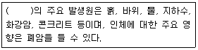
- 석면
- 라돈
- 포름알데히드
- VOC
(정답률: 76%)
10. 광화학반응에 의한 고농도 오존이 나타날 수 있는 기상조건으로 거리가 먼 것은?
- 시간당 일사량이 5MJ/m2 이상으로 일사가 강할 때
- 질소산화물과 휘발성 유기화합물의 배출이 많을 때
- 지면에 복사역전이 존재하고 대기가 불안정할 때
- 기압경도가 완만하여 풍속 4m/sec 이하의 약풍이 지속될 때
(정답률: 78%)
11. 다음 각종 환경관련 국제협약(조약)에 관한 주요 내용으로 옳지 않은 것은?
- 몬트리올의정서: 오존층 파괴물질인 염화불화탄소의 생산과 사용규제를 위한 협약
- 바젤협약: 폐기물의 해양투기로 인한 해양오염을 방지하기 위한 협약
- 람사협약: 자연자원의 보전과 현명한 이용을 위한 습지보전 협약
- CITES: 멸종위기에 처한 야생동식물의 보호를 위한 협약
(정답률: 67%)
12. 일산화탄소에 관한 설명으로 가장 거리가 먼 것은?
- 인위적 주요배출원은 각종 교통수단의 엔진연료의 연소 등이다.
- 자연적 발생원에는 화산폭발, 테르펜류의 산화, 클로로필의 분해, 산불 및 해수 중의 미생물 작용 등이 있다.
- 토양 박테리아에 의하여 대기중에서 제거되거나 대류권 및 성층권에서 일어나는 광화학 반응에 의하여 제거되기도 한다.
- 수용성이기 때문에 강우에 의한 영향이 크며 다른 물질에 흡착되어 제거되기도 한다.
(정답률: 76%)
13. 지상 10m 에서의 풍속이 7.5m/s라면 지상 100m 에서의 풍속은? (단, Deacon 식을 적용, 풍속지수(P) = 0.12)
- 약 8.2 m/s
- 약 8.9 m/s
- 약 9.2 m/s
- 약 9.9 m/s
(정답률: 75%)
14. 다음 기온역전의 발생기전에 관한 설명으로 옳은 것은?
- 이류성 역전 - 따뜻한 공기가 차가운 지표면 위로 흘러갈 때 발생
- 침강형 역전 - 저기압 중심부분에서 기층이 서서히 침강할 때 발생
- 해풍형 역전 - 바다에서 더워진 바람이 차가운 육지 위로 불 때 발생
- 전선형 역전 - 비교적 높은 고도에서 차가운 공기가 따뜻한 공기 위로 전선을 이룰 때 발생
(정답률: 60%)
15. 가우시안(Gaussian)모델에 도입되어 적용된 가정으로 가장 거리가 먼 것은?
- 연기의 분산은 steady state 이다.
- 풍속은 고도에 따라 증가한다.
- 난류확산계수는 일정하다.
- 연직방향의 풍속은 통상 수평방향의 풍속보다 상대적으로 크기가 작기 때문에 연직방향의 풍속을 무시한다.
(정답률: 66%)
16. 다음 중 대기내에서의 오염물질의 일반적인 체류시간 순서로 옳은 것은?
- CO2 ＞ N2O ＞ CO ＞ SO2
- N2O ＞ CO2 ＞ CO ＞ SO2
- CO2 ＞ SO2 ＞ N2O ＞ CO
- N2O ＞ SO2 ＞ CO2 ＞ CO
(정답률: 72%)
17. 질소산화물(NOx)에 관한 설명으로 옳지 않은 것은?
- NOx의 인위적 배출량 중 거의 대부분이 연소과정에서 발생된다.
- NOx는 그 자체도 인체에 해롭지만 광화학스모그의 원인물질로도 중요한 역할을 한다.
- 연소과정에서 처음 발생되는 NOx는 주로 NO 이다.
- 연소시 연료 중 질소의 NO 변환율은 대체로 약 2~5% 범위이다.
(정답률: 77%)
18. 지표부근의 대기 조성성분의 부피농도(%)와 성분별 체류시간이 알맞게 짝지어진 것은?
- N2 : 78.09%, 7~10년
- O2 : 20.94%, 6000년
- CO2 : 0.035ppm, 주로 축척
- H2 : 0.55%, 0.5년
(정답률: 66%)
19. 다음 설명하는 복사의 법칙은?
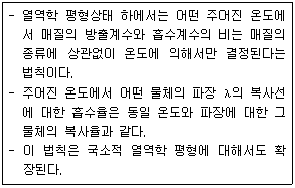
- 스테판볼츠만의 법칙
- 플랭크의 법칙
- 빈의 법칙
- 키르히호프의 법칙
(정답률: 59%)
20. 광화학반응에 관한 설명으로 가장 거리가 먼 것은?
- SO2는 대류권에서 쉽게 광분해되며, 파장 360nm 이하와 510~550nm에서 강한 흡수를 보인다.
- NO2는 파장 420nm 이상의 가시광선에 의해 NO와 O로 광분해된다.
- 알데히드는 파장 313nm 이하에서 광분해한다.
- 케톤은 파장 300~700nm에서 약한 흡수를 하며 광분해한다.
(정답률: 67%)
2과목: 연소공학
21. 석탄의 탄화도가 증가하면 감소하는 것은?
- 착화온도
- 비열
- 발열량
- 고정탄소
(정답률: 75%)
22. 액체연료의 연소장치 중 유압 분무식버너에 관한 설명으로 가장 거리가 먼 것은?
- 대용량 버너 제작이 용이하다.
- 분무각도가 40~90°정도로 크다.
- 연료의 점도가 크거나 유압이 5kg/cm2 이하가 되면 분무화가 불량하다.
- 유량조절범위가 넓어 부하변동 적응에 용이하다.
(정답률: 62%)
23. CO2 50kg을 표준상태에서의 부피(m3)로 나타내면? (단, CO2는 이상기체이고, 표준상태로 간주)
- 12.73
- 22.40
- 25.45
- 44.80
(정답률: 65%)
24. 미분탄연소에 관한 설명으로 가장 거리가 먼 것은?
- 부하변동에 대한 응답성이 우수한 편이어서 대용량의 연소로 적합하다.
- 최초의 분해연소 시에 다량의 가연가스를 방출하고 곧 이어서 고정탄소의 표면연소가 시작된다.
- 명료한 화염면이 형성되고, 화염이 연소실에 국부적으로 형성된다.
- 화격자 연소보다 낮은 공기비로써 높은 연소효율을 얻을 수 있다.
(정답률: 50%)
25. 벤젠의 연소반응이 다음과 같을 때 벤젠의 연소열(kJ/mole)은 얼마인가? (단, 표준상태(25℃, 1atm)에서의 표준생성열)
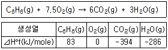
- -3127 kJ/mole
- -3252 kJ/mole
- -33⑤ kJ/mole
- -3514 kJ/mole
(정답률: 56%)
26. 프로판의 고발열량이 20000 kcal/Sm3 이라면 저발열량(kcal/Sm3)은?
- 17240
- 17820
- 18080
- 18430
(정답률: 73%)
27. 프로판과 부탄을 용적비 1:1 로 혼합한 가스 1Sm3를 이론적으로 완전 연소할 때 발생하는 CO2의 양(Sm3)은? (단, 표준상태 기준)
- 1.5
- 2.5
- 3.5
- 4.5
(정답률: 61%)
28. 중유 1kg 중 C 86%, H 12%, S 2%가 포함되어 있었고, 배출가스 성분을 분석한 결과 CO2 13%, O2 3.5% 이었다. 건조연소가스량(Gd, Sm3/kg)은?
- 9.5
- 10.2
- 12.3
- 16.4
(정답률: 60%)
29. 자동차 내연기관의 공연비와 유해가스 발생 농도와의 일반적인 관계를 옳게 설명한 것은?
- 공연비를 이론치보다 높이면 NOx는 감소하고, CO, HC는 증가한다.
- 공연비를 이론치보다 낮추면 NOx는 감소하고, CO, HC는 증가한다.
- 공연비를 이론치보다 높이면 NOx, CO, HC 모두 증가한다.
- 공연비를 이론치보다 낮추면 NOx, CO, HC 모두 감소한다.
(정답률: 63%)
30. 고압기류 분무식 버너의 특징으로 거리가 먼 것은?
- 분무각도는 60°정도로 크고, 유량조절범위는 1:3 정도로 부하변동에 대한 적응이 어렵다.
- 2~8kg/cm2 정도의 고압공기를 사용하여 연료유를 무화시키는 방식이다.
- 연료유의 점도가 커도 분무화가 용이한 편이다.
- 분무에 필요한 1차 공기량은 이론연소공기량의 7~12% 정도이면 된다.
(정답률: 73%)
31. 열적 NOx(Thermal NOx)의 생성억제 방안과 가장 거리가 먼 것은?
- 희박예혼합연소를 함으로써 최고 화염온도를 1800K 이하로 억제한다.
- 물의 증발잠열과 수증기의 현열상승으로 화염열을 빼앗아 온도상승을 억제 한다.
- 화염의 최고온도를 저하시키기 위해서 화염을 분할시키기도 한다.
- 연료유와 배기가스에 암모니아를 투입하고 400~600℃에서 촉매와 접촉시켜 제어한다.
(정답률: 55%)
32. 가연성 가스의 폭발범위에 따른 위험도 증가요인으로 가장 적합한 것은?
- 폭발하한농도가 낮을수록 위험도가 증가하며, 폭발상한과 폭발하한의 차이가 클수록 위험도가 커진다.
- 폭발하한농도가 낮을수록 위험도가 증가하며, 폭발상한과 폭발하한의 차이가 작을수록 위험도가 커진다.
- 폭발하한농도가 높을수록 위험도가 증가하며, 폭발상한과 폭발하한의 차이가 클수록 위험도가 커진다.
- 폭발하한농도가 높을수록 위험도가 증가하며, 폭발상한과 폭발하한의 차이가 작을수록 위험도가 커진다.
(정답률: 71%)
33. 다음 중 공기비(m)가 연소에 미치는 영향에 대한 설명으로 가장 거리가 먼 것은?
- 공기비가 너무 적을 경우 불완전연소로 연소효율이 저하된다.
- 공기비가 너무 큰 경우 배가스 중 NOx양이 감소한다.
- 공기비가 너무 적을 경우 불완전연소로 매연이 발생한다.
- 공기비가 너무 큰 경우 배가스에 의한 열손실이 증가한다.
(정답률: 65%)
34. 석탄을 공업분석 한 결과 수분이 0.8%, 휘발분이 8.5% 이었다. 이 석탄의 연료비는?
- 1.2
- 2.6
- 4.8
- 10.7
(정답률: 51%)
35. 다음 기체연료 중 고위발열량(kJ/mole)이 가장 큰 것은? (단, 25℃, 1atm을 기준으로 한다.)
- carbon monoxide
- methane
- ethane
- n-pentane
(정답률: 72%)
36. 다음 연료 중 CO2 max(%) 값(최대탄산가스량 값(%))이 일반적으로 가장 작은 것은?
- 고로가스
- 발생로가스
- 코우크스로가스
- 무연탄
(정답률: 49%)
37. 메탄을 연소할 때 부피를 기준으로 한 부피공연비(AFR)은 얼마인가?
- 6.84
- 7.68
- 9.52
- 11.58
(정답률: 70%)
38. 조성이 메탄 50%, 에탄 30%, 프로판 20%인 혼합가스의 폭발범위로 가장 적합한 것은? (단, 메탄의 폭발범위 5~15%, 에탄의 폭발범위 3~12.5%, 프로판의 폭발범위 2.1~9.5%, 르샤틀리에의 식 적용)
- 1.2~8.6%
- 1.9~9.6%
- 2.5~10.8%
- 3.4~12.8%
(정답률: 61%)
39. 다음 연소장치 중 일반적으로 가장 큰 공기비를 필요로 하는 것은?
- 미분탄버너
- 수평수동화격자
- 오일버너
- 가스버너
(정답률: 63%)
40. 1000초 동안 반응물의 1/2이 분해되었다면 반응물이 1/250 이 남을 때까지는 얼마의 시간이 필요한가? (단, 1차 반응 기준)
- 약 6650초
- 약 6950초
- 약 7470초
- 약 7970초
(정답률: 62%)
3과목: 대기오염 방지기술
41. NOx의 제어는 연소방식의 변경과 배연가스의 처리기술의 2가지로 구분할 수 있는데, 다음 중 연소방식을 변환시켜 NOx의 생성을 감축시키는 방안으로 가장 거리가 먼 것은?
- 접촉산화법
- 물주입법
- 저과잉공기연소법
- 배기가스재순환법
(정답률: 46%)
42. HOG가 0.7m 이고 제거율이 99%면 흡수탑의 충진높이는?
- 1.6m
- 2.1m
- 2.8m
- 3.2m
(정답률: 57%)
43. 배연탈황기술과 거리가 먼 것은?
- 석회석 주입법
- 수소화 탈황법
- 활성산화 망간법
- 암모니아법
(정답률: 48%)
44. A배출시설에서 시간당 배출가스량이 100,000Sm3이고, 배출가스 중 질소산화물의 농도는 350ppm 이다. 이 질소산화물을 산소의 공존하에 암모니아에 의한 선택적 접촉환원법으로 처리할 경우 암모니아의 소요량은 몇 kg/hr 인가? (단, 탈질율은 90% 이고, 배출가스 중 질소산화물은 전부 NO로 가정한다.)
- 약 18kg/hr
- 약 24kg/hr
- 약 26kg/hr
- 약 30kg/hr
(정답률: 37%)
45. 연소배출가스가 3600Sm3/h 인 굴뚝에서 정압을 측정하였더니 20mmH2O 였다. 여유율 25%인 송풍기를 사용할 경우 필요한 소요 동력은? (단, 송풍기의 정압효율은 80%, 전동기의 효율은 70%로 한다.)
- 0.11kW
- 0.2kW
- 0.44kW
- 9.0kW
(정답률: 55%)
46. 관성충돌계수(효과)를 크게 하기 위한 입자배출원의 특성 또는 운전조건으로 옳지 않은 것은?
- 액적의 직경이 커야 한다.
- 먼지의 밀도가 커야 한다.
- 처리가스와 액적의 상대속도가 커야 한다.
- 처리가스의 점도가 낮아야 한다.
(정답률: 51%)
47. 충전탑(packed tower)내 충전물이 갖추어야 할 조건으로 적절치 않은 것은?
- 단위체적당 넓은 표면적을 가질 것
- 압력손실이 작을 것
- 충전밀도가 작을 것
- 공극률이 클 것
(정답률: 72%)
48. 여과집진장치에서 먼지부하가 444g/m2에 도달하면 먼지를 털어준다고 한다. 만일 입구 먼지농도가 20g/m3, 여과속도를 0.6m/s로 가동할 경우 털어주는 주기는 몇 초 간격으로 하여야 하는가? (단, 집진효율은 95%)
- 35초
- 37초
- 39초
- 44초
(정답률: 48%)
49. 처리가스량 1×106 Sm3/h, 집진장치 입구의 먼지농도 2g/Sm3, 출구의 먼지농도 0.3g/Sm3, 집진장치의 압력손실을 72mmH2O로 했을 경우, Blower의 소요 동력은? (단, Blower의 효율은 80% 이다.)
- 425 kW
- 375 kW
- 245 kW
- 187 kW
(정답률: 49%)
50. 송풍기 회전판 회전에 의하여 집진장치에 공급되는 세정액이 미립자로 만들어져 집진하는 원리를 가진 회전식 세정집진장치에서 직경이 10cm인 회전판이 9620rpm으로 회전할 때 형성되는 물방울의 직경은 몇 ㎛인가?
- 93
- 104
- 208
- 316
(정답률: 41%)
51. 중력식 집진장치의 집진율 향상조건에 관한 다음 설명 중 옳지 않은 것은?
- 침강실 내 처리가스의 속도가 작을수록 미립자가 포집된다.
- 침강실의 입구폭이 클수록 유속이 느려지며 미세한 입자가 포집된다.
- 다단일 경우에는 단수가 증가할수록 집진율은 커지나, 압력손실도 증가한다.
- 침강실의 높이가 낮고, 충력장의 길이가 짧을수록 집진율은 높아진다.
(정답률: 64%)
52. 외부식 후드의 특성으로 옳지 않은 것은?
- 다른 종류의 후드에 비해 근로자가 방해를 많이 받지 않고 작업할 수 있다.
- 포위식 후드보다 일반적으로 필요송풍량이 많다.
- 외부 난기류의 영향으로 흡인효과가 떨어진다.
- 천개형 후드, 그라인더용 후드 등이 여기에 해당하며, 기류속도가 후드 주변에서 매우 느리다.
(정답률: 70%)
53. 다음 중 직물여과기(Fabric Filter)의 여과직물을 청소하는 방법과 거리가 먼 것은?
- 임펙트 제트형
- 진동형
- 역기류형
- 펄스 제트형
(정답률: 43%)
54. 암모니아의 농도가 용적비로 200ppm인 실내공기를 송풍기로 환기시킬 때 실내용적이 4000m3 이고, 송풍량이 100m3/min 이면 농도를 20ppm으로 감소시키기 위한 시간은?
- 82분
- 92분
- 102분
- 112분
(정답률: 46%)
55. 원심력 집진장치 중 분리계수(Separation factor, S)에 대한 설명으로 틀린 것은?
- 분리계수는 중력가속도에 반비례한다.
- 분리계수는 입자에 작용하는 원심력과 중력과의 관계이다.
- 사이클론 원추하부의 반경이 클수록 분리계수는 커진다.
- 원심력이 클수록 분리계수는 커지며 집진율도 증가한다.
(정답률: 52%)
56. 다음은 물리흡착과 화학흡착의 비교표이다. 옳지 않은 것은?
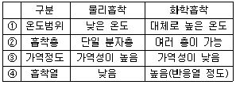
- ①
- ②
- ③
- ④
(정답률: 64%)
57. 전기집진장치의 각종 장애현상에 따른 대책으로 가장 거리가 먼 것은?
- 먼지의 비저항이 낮아 재비산 현상이 발생한 경우 baffle을 설치한다.
- 배출가스의 점성이 커서 역전리 현상이 발생한 경우 집진극의 타격을 강하게 하거나 빈도수를 늘린다.
- 먼지의 비저항이 비정상적으로 높아 2차 전류가 현저하게 떨어질 경우 스파크 횟수를 줄인다.
- 먼지의 비저항이 비정상적으로 높아 2차 전류가 현저하게 떨어질 경우 조습용 스프레이의 수량을 늘린다.
(정답률: 71%)
58. 다음 특성을 가지는 산업용 여과재로 가장 적당한 것은?
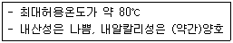
- Cotton
- Teflon
- Orlon
- Glass fiber
(정답률: 60%)
59. 특정대기오염물질에 의한 사고가 발생하였을 때 취할 수 있는 조치로 가장 거리가 먼 것은?
- HCN, PH3, COCl2 등 맹독성 가스에 대해서는 위험표시와 출입금지 표시를 설치한다.
- 용해도가 큰 클로로슬폰산(HSO3Cl)은 보통 많은 양의 물을 사용하여 희석 한다.
- Cl2의 흡수제로는 소석회 이외에 차아염소산소다 220, 탄산소다 175, 물 100정도의 비율로 섞은 것을 사용한다.
- 상온에서는 액상인 물질이나 비점이 상온에 가까운 물질의 증기는 활성탄으로 흡착하는 방법도 효과적이다.
(정답률: 50%)
60. A집진장치의 입구와 출구에서의 함진가스 농도가 각각 10g/Sm3, 100mg/Sm3 이고, 그 중 입경범위가 0~5㎛인 먼지의 질량분율이 각각 8%와 60% 일 때, 이 집진장치에서 입경범위 0~5㎛인 먼지의 부분집진율(%)은?
- 89.5%
- 90.3%
- 92.5%
- Heyhood 직경
(정답률: 54%)
4과목: 대기오염 공정시험기준(방법)
61. 배출가스 중 오르자트 가스 분석계로 산소를 측정할 때 사용되는 산소 흡수액은?
- 수산화칼슘용액 + 피로갈롤용액
- 염화제일주석용액 + 피로갈롤용액
- 수산화칼륨용액 + 피로갈롤용액
- 입상아연 + 피로갈롤용액
(정답률: 60%)
62. 0.25N의 수산화나트륨 용액 200mL를 만들려고 한다. 필요한 수산화나트륨의 양은?
- 2g
- 4g
- 6g
- 8g
(정답률: 41%)
63. 굴뚝 배출가스 중 비소화합물의 자외선/가시선 분광법 측정에 관한 설명으로 옳지 않은 것은?
- 입자상 비소화합물은 강제 흡인 장치를 사용하여 여과장치에 채취하고, 기체상 비소는 적당한 수용액 중에 흡수 채취하며, 채취된 물질을 산 분해 처리한다.
- 전처리하여 용액화한 시료 용액 중 비소를 다이에틸다이티오카바민산은 흡수분광법으로 측정하며, 정량범위는 2~10㎍이며, 정밀도는 2~10% 이다.
- 일부 금속(크롬, 코발트, 구리, 수은, 은 등)이 수소화비소(AsH3) 생성에 영향을 줄 수 있지만 시료 용액 중의 이들 농도는 간섭을 일으킬 정도로 높지는 않다.
- 메틸 비소화합물은 pH 10에서 메틸수소화비소(methylarsine)를 생성하여 흡수용액과 착물을 형성하나, 총 비소 측정에는 영향을 미치지 않는다.
(정답률: 43%)
64. 굴뚝이나 덕트 내를 흐르는 가스의 유속 및 유량 측정에 사용되는 기구 및 장치 등에 관한 다음 설명으로 옳지 않은 것은?
- 피토우관은 스텐레스와 같은 재질의 금속관을 사용하며, 관의 바깥지름의 범위는 20~50mm 정도이어야 한다.
- 피토우관의 각 분기관 사이의 거리는 같아야 하며, 각 분기관과 오리피스 평면과의 거리는 바깥지름의 1.⑤~1.50배 사이에 있어야 한다.
- 차압계는 경사마노미터, 전자마노미터 등을 사용하여 굴뚝배출가스의 차압을 측정할 수 있도록 하며, 최소 0.3mmH2O 눈금을 읽을 수 있는 마노미터를 사용한다.
- 기압계는 2.54 mmHg(34.54 mmH2O)이내에서 대기압력을 측정할 수 있는 수은, 아네로이드(aneroid)등 기압계로 1회/년 이상 교정검사를 한 것을 사용한다.
(정답률: 43%)
65. 굴뚝 배출가스 중 먼지의 농도를 측정하고자 한다. 굴뚝 단면적(m2)이 1초과 4 이하인 사각형 굴뚝단면인 경우 측정점수 산정을 위해 구분된 1변의 길이(L, m) 기준으로 가장 적합한 것은?
- L ≦ 0.1
- L ≦ 0.5
- L ≦ 0.667
- L ≦ 1
(정답률: 57%)
66. 다음은 폐기물 소각로 등에서 배출되는 가스중 가스상 및 입자상의 폴리클로리네이트드 디벤조 파라다이옥신 및 폴리클로리네이티드 디벤조퓨란류의 분석방법 중 원통형 여지 준비에 관한 사항이다. ( )안에 가장 적합한 것은?
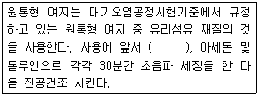
- 550℃에서 충분하게 작열시킨 후
- 650℃에서 2시간 작열시킨 후
- 750℃에서 충분하게 작열시킨 후
- 850℃에서 2시간 작열시킨 후
(정답률: 52%)
67. 대기오염공정시험기준상 소각로, 보일러 등 연소시설의 굴뚝 등에서 배출되는 배출가스 중에 포함되어 있는 알데히드 및 케톤화합물(카르보닐화합물)의 분석방법으로 거리가 먼 것은?
- 크로모트로핀산(Chromotropic Acid)법
- 액체크로마토그래프법(HPLC)
- 아세틸 아세톤(Acetyl Acetone)법
- 가스크로마토그래프법(GC)
(정답률: 45%)
68. 다음은 환경대기 중 아황산가스를 파라로자닐린법으로 측정하고자 할때 흡광광도계에 관한 사항이다. ( )안에 가장 적합한 것은?
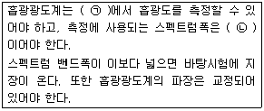
- ㉠ 460nm, ㉡ 10nm
- ㉠ 460nm, ㉡ 15nm
- ㉠ 548nm, ㉡ 10nm
- ㉠ 548nm, ㉡ 15nm
(정답률: 43%)
69. 다음 중 굴뚝 배출가스 내의 포름알데히드를 정량할 때 쓰이는 흡수액은?
- 아세틸아세톤 함유 흡수액
- 아연아민착염 함유 흡수액
- 질산암모늄 + 황산(1+5)
- 수산화나트륨용액(0.4W/V%)
(정답률: 60%)
70. 대기환경중에 존재하는 휘발성유기화합물(Volatile organic compounds : VOCs) 중 오존생성 전구물질과 유해대기오염물질의 농도를 측정하기 위한 시험방법으로 거리가 먼 것은?
- 고체흡착열탈착법
- 고체증기흡수분무법
- 고체흡착용매추출법
- 자동연속열탈착분석법
(정답률: 42%)
71. A 굴뚝에서 배출가스의 유속을 측정하기 위하여 피토우관에 비중이 0.85인 붉게 착색된 톨루엔을 넣은 경사마노미터를 연결하여 다음과 같은 결과를 얻었다. 이 경우 배출가스의 유속은?
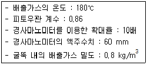
- 6.5 m/s
- 7.8 m/s
- 8.2 m/s
- 9.6 m/s
(정답률: 33%)
72. 다음 중 환경대기 내 아황산가스 농도측정을 위한 주시험방법(수동)인 것은?
- 불꽃광도법
- 용액전도율법
- 파라로자닐린법
- 산정량수동법
(정답률: 51%)
73. 굴뚝 배출가스 내의 질소산화물 분석방법 중 아연환원 나프틸에틸렌디아민법에 관한 설명으로 가장 거리가 먼 것은?
- 시료중 질소산화물을 오존 존재하에서 물에 흡수시켜 질산이온으로 만든다.
- 질산이온을 분말금속아연을 사용하여 아질산이온으로 환원시킨다.
- 시료 중 질소산화물 농도가 10~1000V/Vppm의 것을 분석하는데 적당하다.
- 1000V/Vppm 이상의 아황산가스, 염소이온, 암모늄이온의 공존에 방해를 받는다.
(정답률: 40%)
74. 굴뚝 배출가스 중의 먼지를 연속적으로 자동측정하는 광산란적분법의 4가지 장치구성부로 가장 거리가 먼 것은?
- 엠프부
- 검출부
- 농도지시부
- 수신부
(정답률: 51%)
75. 다음 가스크로마토그래프 분석에 사용되는 검출기 중 금속필라멘트 또는 전기저항체를 검출소자로 하여 금속판 안에 들어 있는 본체와 여기에 안정된 직류전기를 공급하는 전원회로, 전류조절부, 신호검출 전기회로, 신호 감쇄부 등으로 구성되어 있는 것은?
- 전자포획형 검출기(ECD)
- 열전도도 검출기(TCD)
- 수소염 이온화 검출기(FID)
- 염광광도 검출기(FPD)
(정답률: 54%)
76. 원자흡광 광도법(Atomic Absorption Spetrophotometry)에서 사용하는 용어의 정의로 옳지 않은 것은?
- 선프로파일(Line Profile) : 파장에 대한 스펙트럼선의 강도를 나타내는 곡선
- 예복합 버너(Premix Type Burner) : 가연성 가스, 조연성 가스 및 시료를 분무실에서 혼합시켜 불꽃중에 넣어주는 방식의 버너
- 분무실(Nebulizer-Chamber) : 분무기와 병용하여 분무된 시료용액의 미립자를 더욱 미세하게 해주는 한편 큰 입자와 분리시키는 작용을 갖는 장치
- 공명선(Resonance Line) : 목적하는 스펙트럼선에 가까운 파장을 갖는 다른 스펙트럼선
(정답률: 69%)
77. 비중이 1.88, 농도 97%(중량%)인 농황산(H2SO4)의 규정농도(N)는?
- 18.6 N
- 24.9 N
- 37.2 N
- 49.8 N
(정답률: 47%)
78. 다음은 화학분석 일반사항에 대한 규정이다. 옳지 않은 것은?
- "약"이란 그 무게 또는 부피에 대하여 ±10% 이상의 차가 있어서는 안된다.
- 방울수라 함은 10℃에서 정제수 10방울을 떨어뜨릴 때 그 부피가 약 1mL 되는 것을 뜻한다.
- 밀봉용기라 함은 물질을 취급 또는 보관하는 동안에 기체 또는 미생물이 침입하지 않도록 내용물을 보호하는 용기를 뜻한다.
- 냉수는 15℃이하, 온수는 60~70℃, 열수는 약 100℃를 말한다.
(정답률: 72%)
79. 배출가스 중의 금속을 유도결합플라스마 원자발광분광법으로 분석할 때 각 원소별 측정파장(nm)과 정량범위(mg/L)로 옳지 않은 것은?
- Cu : 324.75(nm), 0.04~20(mg/L)
- Cd : 226.50(nm), 0.008~2(mg/L)
- Pb : 220.35(nm), 0.1~2(mg/L)
- Zn : 259.94(nm), 0.04~1(mg/L)
(정답률: 52%)
80. 배출가스 중 금속화합물을 분석하기 위해 채취한 시료가 다량의 유기물 유리탄소를 함유할 때 시료의 처리방법으로 가장 적합한 것은?
- 질산-염산법
- 질산-과산화수소법
- 질산법
- 저온회화법
(정답률: 48%)
5과목: 대기환경관계법규
81. 다음은 대기환경보전법령상 시·도지사가 특정대기유해물질 배출시설 또는 특별대책지역에서의 배출시설의 설치를 제한할 수 있는 경우에 관한 기준이다. ( )안에 알맞은 것은?
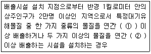
- ① 5톤, ② 10톤
- ① 5톤, ② 20톤
- ① 10톤, ② 20톤
- ① 10톤, ② 25톤
(정답률: 64%)
82. 다음은 대기환경보전법령상 기본부과금 부과대상 오염물질에 대한 초과 배출량 산정방법 중 초과배출량 공제분 산정방법이다. ( )안에 알맞은 것은?
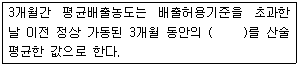
- 5분 평균치
- 10분 평균치
- 30분 평균치
- 1시간 평균치
(정답률: 56%)
83. 대기환경보전법규상 특정대기유해물질로 옳지 않은 것은?
- 이황화메틸
- 베릴륨
- 바나듐
- 1,3-부타디엔
(정답률: 47%)
84. 대기환경보전법규상 휘발유를 연료로 사용하는 대형승용차의 배출가스 보증기간 적용기준은? (단, 2013년 1월 1일 이후 제작 자동차 기준)
- 2년 또는 160000km
- 6년 또는 100000km
- 7년 또는 500000km
- 10년 또는 160000km
(정답률: 49%)
85. 다중이용시설 등의 실내공기질 관리법상 시·도지사는 다중이용시설이 규정에 따른 공기질 유지기준에 맞지 아니하게 관리되는 경우에는 환경부령이 정하는 바에 따라 기간을 정하여 그 다중이용시설의 소유자 등에게 환기 설비의 개선 등의 개선명령을 할 수 있는데, 이 개선명령을 이행하지 아니한 사업자에 대한 벌칙기준으로 옳은 것은?
- 7년 이하의 징역 또는 7천만원 이하의 벌금
- 5년 이하의 징역 또는 5천만원 이하의 벌금
- 1년 이하의 징역 또는 1천만원 이하의 벌금
- 200만원 이하의 벌금
(정답률: 49%)
86. 대기환경보전법규상 배출가스 관련부품을 장치별로 구분할 때 다음 중 배출가스 자기진단장치(On Board Diagnostics)에 해당하는 것은?
- EGR제어용 서모밸브(EGR Control Thermo Valve)
- 연료계통 감시장치(Fuel System Monitor)
- 정화조절밸브(Purge Control Valve)
- 냉각수온센서(Water Temperature Sensor)
(정답률: 49%)
87. 대기환경보전법상 부식이나 마모로 인하여 오염물질이 새나가는 배출시설이나 방지시설을 정당한 사유없이 방치하는 행위를 한 자에 대한 과태료 부과기준은?
- 500만원 이하의 과태료
- 300만원 이하의 과태료
- 200만원 이하의 과태료
- 100만원 이하의 과태료
(정답률: 24%)
88. 대기환경보전법상 황사피해방지를 위한 환경부 산하 황사대책위원회의 심의·조정업무와 가장 거리가 먼 것은? (단, 그 밖에 황사피해 방지를 위하여 위원장이 필요하다고 인정하는 사항 등은 제외)
- 종합대책의 수립과 변경에 관한 사항
- 황사피해방지와 관련된 분야별 정책에 관한 사항
- 종합대책 추진상황과 민관 협력방안에 관한 사항
- 황사피해로 인한 재산상의 피해보상 및 보건역학적 조사에 관한 사항
(정답률: 48%)
89. 대기환경보전법규상 그 배출시설이 발전소의 발전 설비로서 국민경제에 현저한 지장을 줄 우려가 있어 조업정지처분을 갈음하여 과징금을 부과할 때, 3종사업장인 경우 조업정지 1일당 부과금액 기준으로 옳은 것은?
- 900만원
- 600만원
- 450만원
- 300만원
(정답률: 55%)
90. 대기환경보전법령상 시·도지사가 부과금을 부과할 경우 부과대상 오염 물질량 등을 적은 사항을 서면으로 알려야 하는데, 이 경우 부과금의 납부기간은 며칠로 하는가?
- 납부통지서를 발급한 날부터 10일로 한다.
- 납부통지서를 발급한 날부터 15일로 한다.
- 납부통지서를 발급한 날부터 30일로 한다.
- 납부통지서를 발급한 날부터 60일로 한다.
(정답률: 41%)
91. 대기환경보전법령상 초과부과금 산정기준에서 다음 오염물질 중 오염물질 1킬로그램당 부과금액이 가장 비싼 것은?(오류 신고가 접수된 문제입니다. 반드시 정답과 해설을 확인하시기 바랍니다.)
- 황화수소
- 염소
- 황산화물
- 이황화탄소
(정답률: 42%)
92. 대기환경보전법상 "온실가스"가 아닌 것은?
- 이산화탄소
- 수소불화탄소
- 이산화질소
- 육불화황
(정답률: 56%)
93. 대기환경보전법규상 위임업무 보고사항 중 자동차 연료 및 첨가제의 제조·판매 또는 사용에 대한 규제현황의 보고횟수기준은?
- 연 2회
- 연 4회
- 반기 1회
- 수시
(정답률: 59%)
94. 대기환경보전법규상 관제센터로 측정결과를 자동전송하지 않은 먼지·황산화물 및 질소산화물의 연간 발생량의 합계가 80톤 이상인 사업장 배출구의 자가측정횟수 기준은? (단, 기타사항 등은 제외)
- 매일 1회 이상
- 매주 1회 이상
- 매월 2회 이상
- 2개월마다 1회 이상
(정답률: 56%)
95. 대기환경보전법령상 사업장별 환경기술인의 자격기준에 관한 사항으로 가장 적합한 것은?
- 5종 사업장 중 특정대기유해물질이 포함된 오염물질을 배출하는 경우에는 4종 사업장에 해당하는 환경기술인을 두어야 한다.
- 1종 및 2종 사업장 중 1월 동안 실제 작업한 날만을 계산하여 1일 평균 12시간이상 작업하는 경우에는 해당사업장의 환경기술인을 각 2인 이상 두어야하며, 이 경우 1인을 제외한 나머지 인원은 4종사업장에 해당하는 기술인으로 대체할 수 있다.
- 전체 배출시설에 대하여 방지시설 설치면제를 받은 사업장이라도 해당종별에 해당하는 환경기술인을 두어야 한다.
- 대기환경기술인이 수질및 수생태계 보전에 관한 법률에 따른 수질환경기술인의 자격을 갖춘 경우에는 수질환경기술인을 겸임할 수 있다.
(정답률: 50%)
96. 대기환경보전법규상 대기환경 규제지역을 관할하는 시·도지사가 수립하는 실천계획에 포함되는 사항으로 가장 거리가 먼 것은?
- 대기보전을 위한 투자계획과 대기오염물질 저감효과를 고려한 경제성 평가
- 대기오염물질 방지대책 선정을 위한 주민여론 수렴현황
- 대기오염원별 대기오염물질 저감계획 및 계획의 시행을 위한 수단
- 계획달성연도의 대기질 예측 결과
(정답률: 45%)
97. 대기환경보전법규상 자동차의 종류에 관한 사항으로 옳지 않은 것은?(단, 2009년 1월 1일 이후기준)
- 엔진배기량이 50cc 미만인 이륜자동차는 모페드형(스쿠터형을 포함한다)만 이륜자동차에서 제외한다.
- 이륜자동차는 옆 차불이 이륜자동차와 이륜자동차에서 파생된 3륜 이상의 자동차를 포함하며, 차량 자체의 중량이 0.5톤 이상인 이륜자동차는 경자동차로 분류한다.
- 다목적형 승용자동차·승합차 및 밴(VAN)의 구분에 대해 세부 기준은 환경부장관이 정하여 고시한다.
- 전기만을 동력으로 사용하는 자동차는 1회 충전 주행거리가 160km 이상인 경우 제3종으로 구분된다.
(정답률: 40%)
98. 대기환경보전법령상 일일유량은 측정유량과 일일조업시간의 곱으로 환산하는데, 다음 중 일일조업시간의 표시기준으로 옳은 것은?
- 배출량을 측정하기 전 최근 조업한 20일 동안의 배출시설 조업시간 평균치를 시간으로 표시한다.
- 배출량을 측정하기 전 최근 조업한 25일 동안의 배출시설 조업시간 평균치를 시간으로 표시한다.
- 배출량을 측정하기 전 최근 조업한 30일 동안의 배출시설 조업시간 평균치를 시간으로 표시한다.
- 배출량을 측정하기 전 최근 조업한 전체기간의 배출시설 조업시간 평균치를 시간으로 표시한다.
(정답률: 61%)
99. 악취방지법규상 지정악취물질이 아닌 것은?
- 아세트알데하이드
- 메틸메르캅탄
- 톨루엔
- 벤젠
(정답률: 53%)
100. 대기환경보전법령상 대기오염물질 기준이내배출량 조정시 사업자가 제출한 확정배출량자료가 명백히 거짓으로 판명되었을 경우에는 확정배출량을 현지조사하여 산정하되 확정배출량의 얼마에 해당하는 배출량을 기준이내배출량으로 산정하는가?
- 100분의 20
- 100분의 50
- 100분의 120
- 100분의 150
(정답률: 51%)
우선, 기름방울의 부피를 구해보자.
기름방울의 반지름은 0.2㎛이므로 부피는 다음과 같다.
V = (4/3)πr^3 = (4/3)π(0.2×10^-4)^3 = 3.35×10^-14 cm^3
분산면적비가 4.5이므로, 기름방울의 표면적은 다음과 같다.
A = (4.5/3.14)×(0.4×10^-4)^2 = 2.03×10^-8 cm^2
기름방울의 밀도가 1700mg/cm^3 이므로, 기름방울의 질량은 다음과 같다.
m = ρV = 1700×3.35×10^-14 = 5.7×10^-11 g
먼지의 총 농도를 구하기 위해서는 기름방울이 분산된 체적을 구해야 한다. 이를 위해 기름방울이 분산된 체적을 구하는 공식을 사용한다.
분산된 체적 = (분산면적)×(가시거리)
분산된 체적 = 2.03×10^-8×959 = 1.95×10^-5 cm^3
먼지의 총 농도는 다음과 같다.
먼지의 총 농도 = (기름방울의 질량)×(분산된 체적)×(먼지의 밀도)
먼지의 밀도는 밀도가 1700mg/cm^3 인 물질의 밀도인 1.7×10^-3 g/cm^3 이다.
먼지의 총 농도 = 5.7×10^-11×1.95×10^-5×1.7×10^-3 = 1.5×10^-18 g/cm^3
이 값을 mg/m^3 단위로 변환하면 다음과 같다.
1.5×10^-18×10^6 = 1.5×10^-12 mg/m^3
따라서, 먼지농도는 0.41이 아닌 0.0000000000015이다. 이는 보기에서 제시된 값들 중 어느 하나와도 일치하지 않는다.